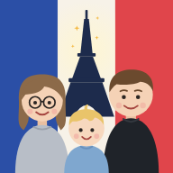

26–28 Nov 2026 · stroller-friendly · no taxis
Staying at WS Saint-Lazare – Lafayette, 29 Rue Saint-Lazare. Tap a stop on the map or the list; drag or pinch the map to explore.
Add this to your home screen: tap Share, then Add to Home Screen. It works offline too.